Sistema de Punto de Venta para Hostelería
Versión 1.0.0 | Febrero 2026
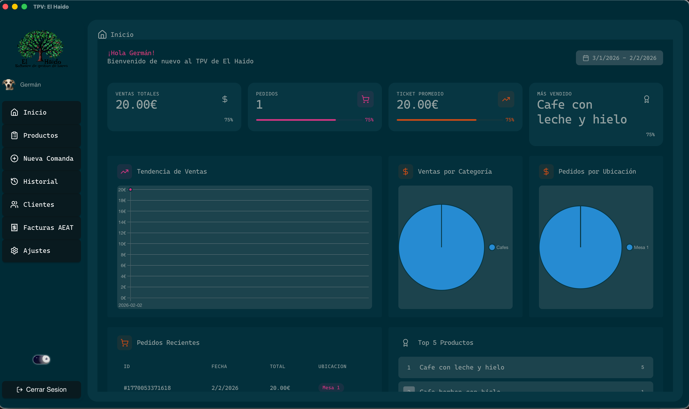
Imagen de portada: TPV El Haido - Sistema de Punto de Venta
Introducción — Visión general y primeros pasos
Instalación — Guía de instalación por sistema operativo
Primeros Pasos — Configuración inicial y primera venta
Gestión de Pedidos — Crear, modificar y gestionar comandas
Gestión de Productos — Catálogo de productos y categorías
Gestión de Clientes — Base de datos de clientes
Procesamiento de Pagos — Cobros, tickets y cierre de caja
Facturación VERI*FACTU — Integración con la AEAT
Configuración de Impresora — Impresoras térmicas y tickets
Temas y Personalización — Personaliza la interfaz
Bienvenido a TPV El Haido, tu sistema de punto de venta diseñado específicamente para hostelería. Esta guía te acompañará desde la instalación hasta el dominio completo de todas las funcionalidades.
Nota para desarrolladores Esta guía está pensada para usuarios finales. Si eres desarrollador, consulta la sección de desarrollo en la documentación online.
| Funcionalidad | Descripción |
|---|---|
| Pedidos | Crea comandas, gestiona mesas y cobra de forma rápida |
| Productos | Organiza tu catálogo con categorías, precios e imágenes |
| Clientes | Mantén una base de datos para facturas completas |
| Pagos | Efectivo, tarjeta o mixto con cálculo automático de cambio |
| Impresión | Tickets térmicos personalizados con tu logo |
| Facturación | Envío automático a la AEAT con VERI*FACTU |
| Temas | 6 temas visuales para adaptar la interfaz a tu negocio |
El uso diario de TPV El Haido sigue este flujo sencillo:
La interfaz está organizada en secciones accesibles desde el menú lateral:
| Sección | Icono | Descripción |
|---|---|---|
| Inicio | 🏠 | Panel principal con resumen del día |
| Nueva Comanda | ➕ | Crear pedidos y añadir productos |
| Historial | 📋 | Consultar pedidos anteriores |
| Productos | 📦 | Gestionar tu catálogo |
| Clientes | 👥 | Base de datos de clientes |
| Facturas | 📄 | Facturas AEAT y estados |
| Ajustes | ⚙️ | Configuración del sistema |
Si tienes preguntas o encuentras problemas:
Abre el pannel de settings, escanea el codifo QR en la parte de problemas y sigue las instrucciones
Guía paso a paso para instalar TPV El Haido en tu sistema operativo.
Antes de instalar, verifica que tu equipo cumple estos requisitos:
| Componente | Mínimo | Recomendado |
|---|---|---|
| RAM | 512 MB | 1 GB o más |
| Almacenamiento | 100 MB | 500 MB |
| Pantalla | 800×600 | 1024×768 o superior |
| Internet | Opcional | Requerido para VERI*FACTU |
Paso 1: Descargar el instalador
Accede a GitHub Releases
Descarga el archivo TPV.El.Haido_x.x.x_x64-setup.exe
Paso 2: Ejecutar el instalador
Haz doble clic en el archivo descargado
Si aparece Windows SmartScreen:
Haz clic en "Más información"
Luego en "Ejecutar de todas formas"
Sigue el asistente de instalación
Paso 3: Verificar la instalación
Busca "TPV El Haido" en el menú de inicio
Haz clic para abrir la aplicación
Deberías ver la pantalla de login o el asistente de configuración
⚠️ Windows SmartScreen Al ser una aplicación no firmada por Microsoft, Windows puede mostrar una advertencia. Esto es completamente normal para software independiente y no indica ningún problema de seguridad.
Paso 1: Descargar el DMG
Accede a GitHub Releases
Descarga el archivo correspondiente a tu Mac:
Mac con Intel: TPV.El.Haido_x64.dmg
Mac con Apple Silicon (M1/M2/M3/M4): TPV.El.Haido_aarch64.dmg
Paso 2: Instalar la aplicación
Abre el archivo DMG descargado
Arrastra el icono de TPV El Haido a la carpeta "Aplicaciones"
Expulsa el volumen DMG (clic derecho → Expulsar)
Paso 3: Primera ejecución
Abre la carpeta Aplicaciones
Haz clic derecho en "TPV El Haido"
Selecciona "Abrir" en el menú contextual
En el diálogo de seguridad, haz clic en "Abrir"
ℹ️ Gatekeeper de macOS macOS puede bloquear la primera ejecución de aplicaciones descargadas. Usar clic derecho → Abrir evita tener que ir a Preferencias del Sistema.
Paso 1: Instalar dependencias
xxxxxxxxxxsudo apt updatesudo apt install -y libwebkit2gtk-4.1-0 libgtk-3-0Paso 2: Descargar e instalar
xxxxxxxxxx# Descargar la última versiónwget https://haido.releases.mks2508.systems/api/dl/0.1.3/linux/x86_64/tpv-haido-0.1.3-linux-amd64.AppImage
# Instalar el paquetesudo dpkg -i tpv-el-haido_amd64.deb
# Resolver dependencias si es necesariosudo apt-get install -fPaso 3: Ejecutar
xxxxxxxxxx# Desde terminaltpv-el-haido
# O buscar "TPV El Haido" en el menú de aplicacionesxxxxxxxxxx# Descargarwget https://haido.releases.mks2508.systems/api/dl/0.1.3/linux/x86_64/tpv-haido-0.1.3-linux-amd64.AppImage
# Hacer ejecutablechmod +x tpv-el-haido.AppImage
# Ejecutar./tpv-el-haido.AppImage
Paso 1: Instalar dependencias
xxxxxxxxxxsudo apt updatesudo apt install -y libwebkit2gtk-4.1-0 libgtk-3-0Paso 2: Descargar e instalar
xxxxxxxxxxwget https://haido.releases.mks2508.systems/api/dl/0.1.3/linux/aarch64/tpv-haido-0.1.3-linux-arm64.AppImagesudo dpkg -i tpv-el-haido_arm64.debsudo apt-get install -fOptimizaciones recomendadas para Raspberry Pi:
Usa el tema de alto contraste (menos efectos visuales)
Desactiva las animaciones en Ajustes
Asigna al menos 256 MB a la GPU en raspi-config
Una vez instalada, accederás al asistente de configuración:
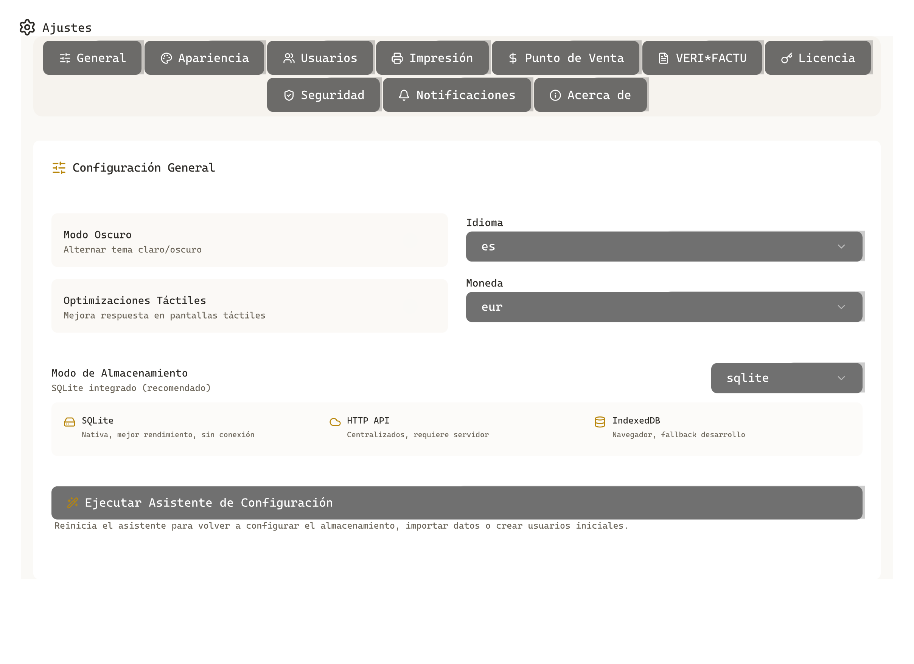
Imagen: Pantalla de Ajustes con las opciones de configuración disponibles
Para acceder a todas las funcionalidades, valida tu licencia:
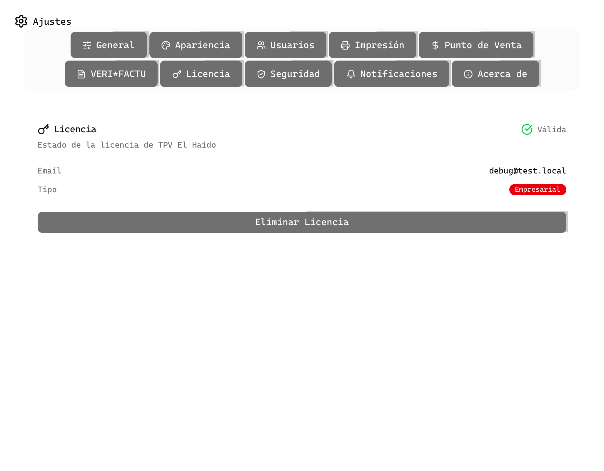
Imagen 3: Pantalla de licencia válida con estado "Licencia Activa"
Pasos para validar:
Ve a Ajustes → Licencia
Introduce tu clave de licencia
Haz clic en Validar
Si es válida, verás el estado "Licencia Activa"
Crea cuentas para cada empleado de tu negocio:
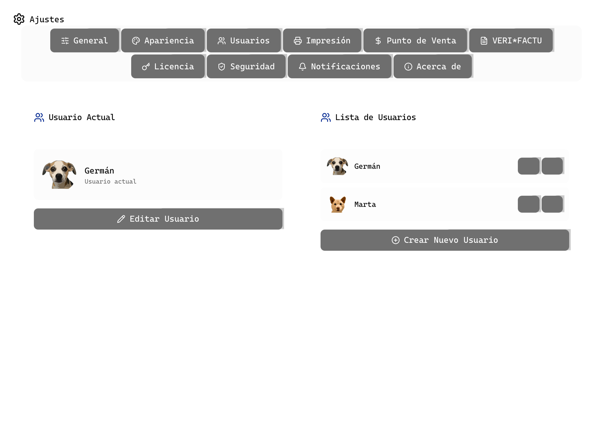
Imagen 4: Panel de gestión de usuarios en Ajustes
Crear un nuevo usuario:
Ve a Ajustes → Usuarios
Haz clic en Nuevo Usuario
Introduce:
Nombre: Nombre del empleado
Avatar: Selecciona una imagen
PIN: Código de 4 dígitos
Rol: Administrador o Empleado
Haz clic en Guardar
ℹ️ Roles de usuario
Administrador: Acceso completo a ajustes y configuración
Empleado: Solo puede crear pedidos y ver historial propio
Ve a Ajustes → Licencia
Introduce tu clave de licencia
Haz clic en Validar
Si es válida, verás el estado "Licencia Activa"
ℹ️ Modo demo Puedes usar la aplicación sin licencia en modo demo, pero algunas funciones estarán limitadas.
En Windows:
Verifica que tienes Windows 10 o superior
Intenta ejecutar como administrador
Revisa si un antivirus está bloqueando la ejecución
Reinstala la aplicación
En macOS:
Ve a Preferencias del Sistema → Seguridad y Privacidad
En la pestaña General, haz clic en "Abrir de todas formas"
Si persiste, ejecuta: xattr -cr /Applications/TPV\ El\ Haido.app
En Linux:
Verifica las dependencias: apt list --installed | grep webkit
Comprueba permisos: chmod +x /usr/bin/tpv-el-haido
Ejecuta desde terminal para ver errores: tpv-el-haido
Si ves un error relacionado con SQLite:
Cierra la aplicación completamente
Localiza y elimina el archivo de base de datos:
Windows: %APPDATA%\com.elhaido.tpv\tpv-haido.db
macOS: ~/Library/Application Support/com.elhaido.tpv/tpv-haido.db
Linux: ~/.config/com.elhaido.tpv/tpv-haido.db
Reinicia la aplicación (se creará una nueva base de datos)
⚠️ Pérdida de datos Borrar la base de datos eliminará todos tus datos. Haz una copia de seguridad primero si es posible.
Después de instalar TPV El Haido, sigue esta guía para configurar tu sistema y realizar tu primera venta.
La primera vez que abras la aplicación, el asistente te guiará:
Paso 1: Bienvenida
El asistente te dará la bienvenida. Haz clic en "Comenzar" para iniciar.
Paso 2: Modo de almacenamiento
Selecciona cómo quieres guardar tus datos:
| Modo | Descripción | Cuándo usarlo |
|---|---|---|
| SQLite | Base de datos local en tu equipo | Un solo terminal (recomendado) |
| HTTP | Conexión a servidor externo | Múltiples terminales sincronizados |
| IndexedDB | Almacenamiento en navegador | Modo web o demostración |
💡 Recomendación Para la mayoría de usuarios, SQLite es la mejor opción. Es rápido, fiable y no requiere configuración adicional.
Paso 3: Crear usuario administrador
Introduce el nombre del usuario (ejemplo: "Admin")
Selecciona un avatar o sube una foto
Crea un PIN de 4 dígitos
Confirma el PIN
Paso 4: Tema visual
Elige el tema que mejor se adapte a tu negocio:
Restaurant Professional: Colores cálidos y elegantes
Modern Cafe: Verde minimalista
Night Bar: Tema oscuro con acentos neón
High Contrast: Máxima legibilidad
Paso 5: Completar
Haz clic en "Finalizar" para completar la configuración.
Después de la configuración, verás la pantalla de acceso:
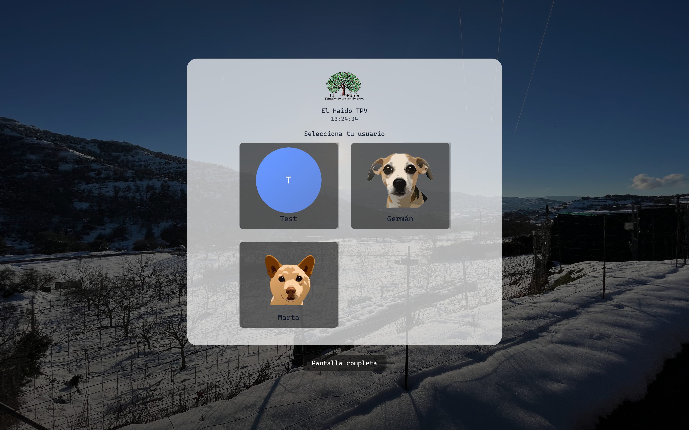
Imagen 1: Pantalla de login con selección de usuario por avatar
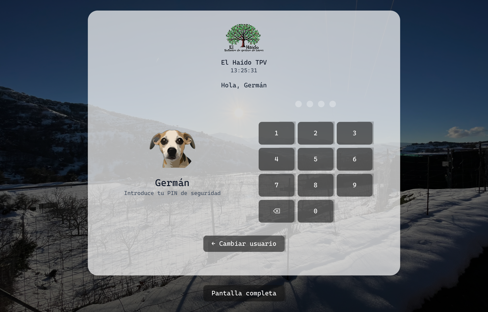
Imagen 2: Pantalla de introducción del PIN de acceso
Para acceder:
Toca tu avatar para seleccionar tu usuario
Introduce tu PIN de 4 dígitos
Pulsa Enter o el botón de acceso
ℹ️ Múltiples usuarios Puedes crear más usuarios desde Ajustes → Usuarios para que cada empleado tenga su propio acceso.
Una vez dentro, verás el panel principal:
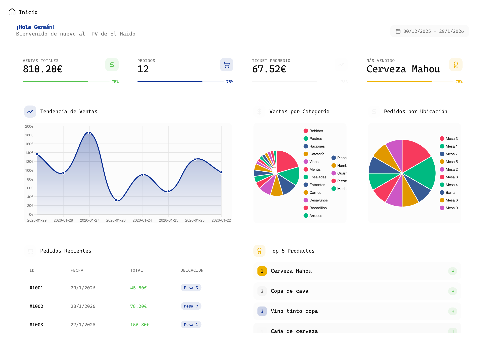
Imagen: Dashboard principal de TPV El Haido con información del día
Desde aquí puedes:
Ver el resumen de ventas del día
Crear nuevas comandas rápidamente
Ver el estado de las mesas
Acceder a cualquier sección del sistema
Antes de añadir productos, necesitas al menos una categoría:
Paso 1: En el menú lateral, haz clic en Productos
Paso 2: Haz clic en el botón Categorías o el icono de carpeta
Paso 3: Haz clic en Nueva Categoría
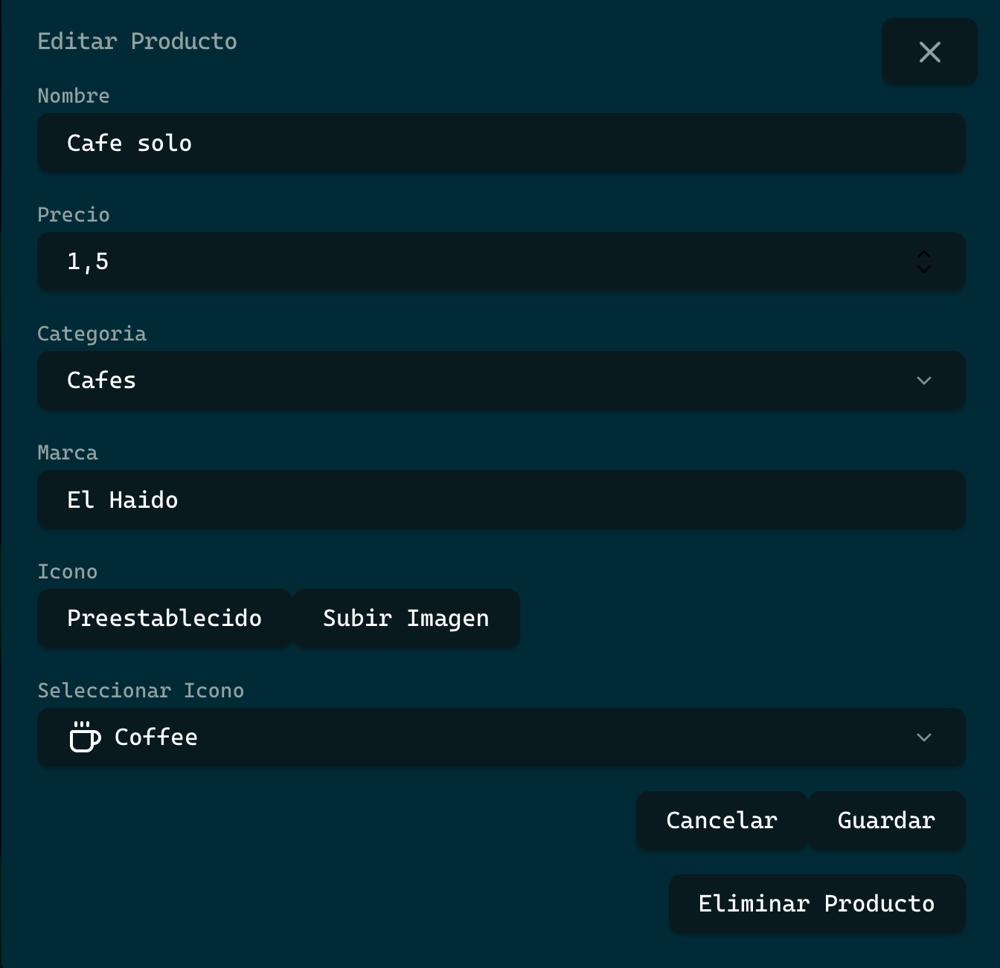
Imagen 5: Diálogo de creación de categoría
Paso 4: Rellena los datos:
| Campo | Ejemplo | Obligatorio |
|---|---|---|
| Nombre | Bebidas | Sí |
| Descripción | Refrescos, cervezas, vinos... | No |
| Icono | 🍺 | No |
Paso 5: Haz clic en Guardar
Paso 1: En la sección Productos, haz clic en Nuevo Producto
Paso 2: Rellena la información básica:
| Campo | Ejemplo | Descripción |
|---|---|---|
| Nombre | Cerveza | Nombre que verás en el TPV |
| Precio | 2.50 | Precio SIN IVA |
| Categoría | Bebidas | La categoría que creaste |
| IVA | 21% | Tipo impositivo aplicable |
Paso 3: Opcionalmente, añade una imagen o icono
Paso 4: Haz clic en Crear Producto
Paso 1: Crear nueva comanda
En el menú lateral, haz clic en Nueva Comanda
Opcionalmente, selecciona una mesa
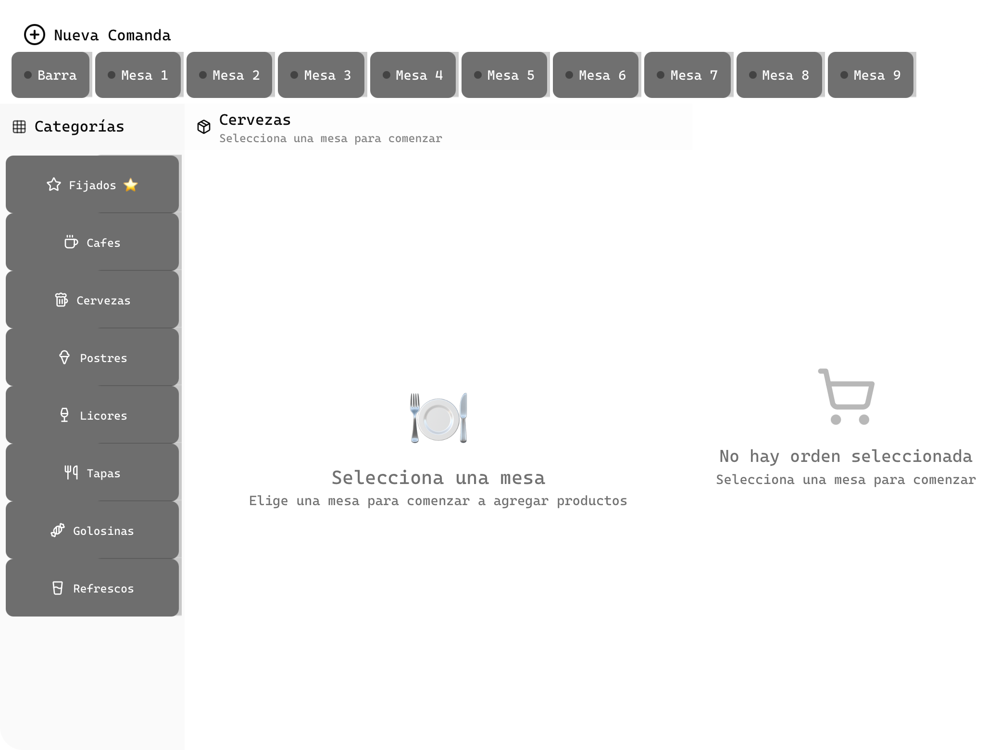
Imagen: Pantalla de Nueva Comanda con el grid de productos
Paso 2: Añadir productos
Navega por las categorías en la barra lateral izquierda
Haz clic en los productos para añadirlos
El resumen aparece en el panel derecho
Paso 3: Ajustar cantidades
+ aumenta la cantidad
- reduce la cantidad
🗑️ elimina el producto
Paso 4: Cobrar
Haz clic en Cobrar
Selecciona el método de pago (Efectivo, Tarjeta, Otro)
Si es efectivo, introduce el importe recibido
El sistema calcula el cambio automáticamente
Haz clic en Confirmar Pago
Paso 5: Ticket impreso
El ticket se imprime automáticamente si tienes impresora configurada.
Has completado la configuración básica:
Asistente de configuración completado
Usuario administrador creado
Primera categoría creada
Primer producto añadido
Primera venta realizada
✅ ¡Listo! Tu TPV está operativo. Explora el resto de la documentación para aprovechar todas las funcionalidades.
Aprende a crear, modificar y gestionar comandas de forma eficiente.
Paso 1: En el menú lateral, haz clic en Nueva Comanda
Paso 2: Si tu negocio usa mesas:
Verás un grid con las mesas disponibles
Haz clic en una mesa para asignar el pedido
O selecciona "Barra" / "Para llevar"
Paso 3: Añade productos:
Imagen: Pantalla de creación de comanda
Navega por categorías en la barra lateral
Haz clic en un producto para añadirlo
Repite para añadir más productos
Paso 4: Revisa el resumen en el panel derecho:
Lista de productos añadidos
Cantidad de cada uno
Precio por línea
Total del pedido
Desde el panel de resumen del pedido, puedes ajustar cada línea:
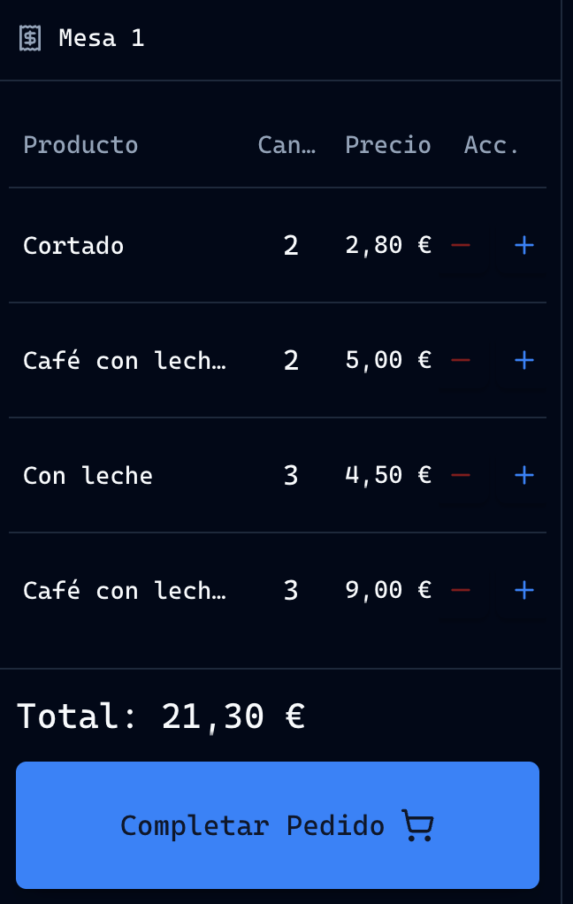
Imagen 6: Panel de modificación de pedido con controles de cantidad
| Acción | Cómo hacerlo |
|---|---|
| Aumentar cantidad | Botón + junto al producto |
| Reducir cantidad | Botón - junto al producto |
| Cantidad específica | Clic en el número y escribir la cantidad |
| Eliminar producto | Icono de papelera o reducir a 0 |
| Añadir nota | Clic en el producto → escribir nota (ej: "sin cebolla") |
Los pedidos pasan por diferentes estados:
| Estado | Descripción |
|---|---|
| En Curso | Pedido activo, se pueden añadir/quitar productos |
| Pendiente de Pago | Listo para cobrar |
| Pagado | Pago recibido correctamente |
| Cerrado | Pedido finalizado completamente |
| Cancelado | Pedido anulado |
Ver estado de mesas:
En Inicio o Nueva Comanda, cada mesa muestra su estado:
Verde: Mesa libre
Rojo: Mesa ocupada
Amarillo: Pendiente de pago
Cambiar mesa:
Abre el pedido activo
Haz clic en Cambiar Mesa
Selecciona la nueva mesa
Confirma el cambio
Juntar mesas:
Abre el pedido de la mesa principal
Haz clic en Añadir Mesa
Selecciona las mesas a unir
Los pedidos se combinan automáticamente
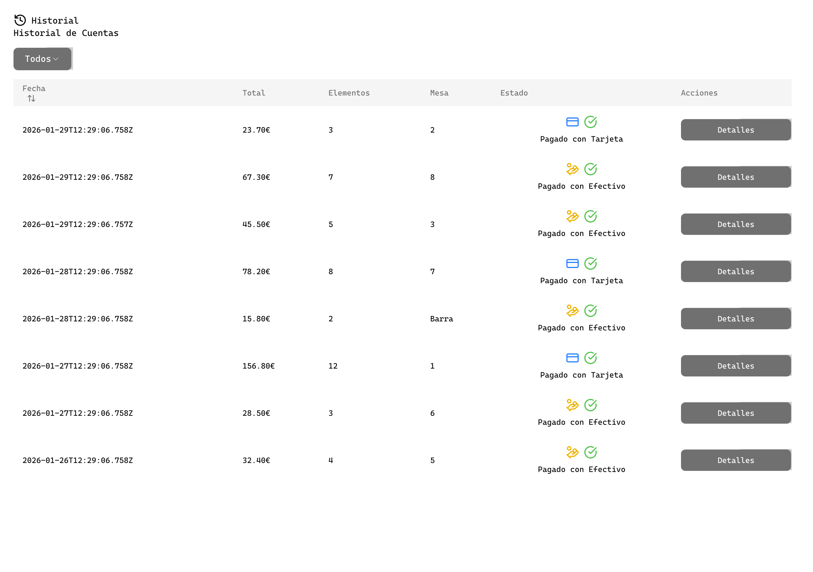
Imagen: Historial de pedidos con opciones de filtrado
Acceder: Menú lateral → Historial
Filtros disponibles:
| Filtro | Descripción |
|---|---|
| Fecha | Selecciona un rango de fechas |
| Estado | Pagado, cancelado, pendiente... |
| Usuario | Filtra por quién creó el pedido |
| Mesa | Filtra por número de mesa |
Ver detalle de un pedido:
Haz clic en cualquier pedido para ver:
Productos y cantidades
Hora de creación
Método de pago
Usuario que lo gestionó
Reimprimir ticket:
En el detalle del pedido, haz clic en Imprimir.
Repetir pedido: En el historial, abre un pedido anterior y haz clic en Repetir Pedido. Se crea una nueva comanda con los mismos productos.
Dividir cuenta: Al cobrar, haz clic en Dividir:
Selecciona el número de partes
El sistema divide el total equitativamente
O asigna productos específicos a cada cuenta
Si usas impresora de cocina:
Los productos de categorías marcadas como "cocina" se envían automáticamente
Puedes reenviar manualmente desde el detalle del pedido
Configura las categorías en Ajustes → Impresora → Cocina
Aprende a organizar tu catálogo de productos y categorías.
En el menú lateral, haz clic en Productos
Verás el grid de productos con opciones de búsqueda y filtrado
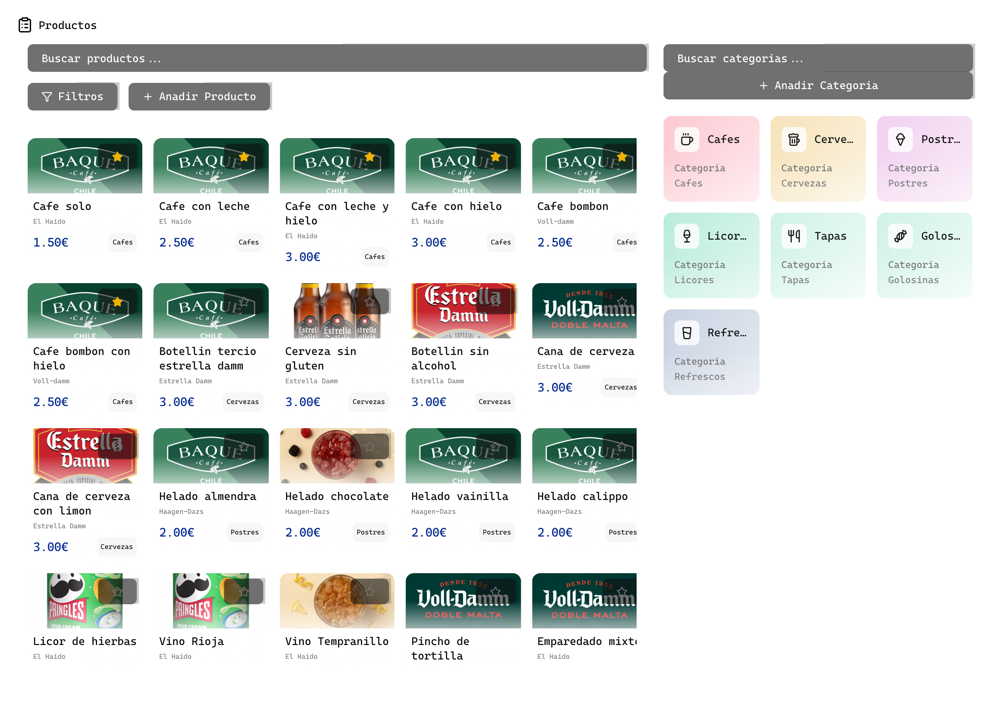
Imagen: Catálogo de productos con vista en cuadrícula
Las categorías organizan tus productos para facilitar la navegación durante las ventas.
Crear una categoría:
En Productos, haz clic en Categorías
Haz clic en Nueva Categoría
Completa los campos:
| Campo | Descripción | Ejemplo |
|---|---|---|
| Nombre | Nombre de la categoría | "Bebidas Frías" |
| Descripción | Descripción opcional | "Refrescos, zumos, agua..." |
| Icono | Icono visual | 🍺 |
Haz clic en Crear
Editar/Eliminar:
Editar: Icono de lápiz junto a la categoría
Eliminar: Icono de papelera (los productos pasan a "Sin categoría")
Crear un producto:
| Campo | Descripción | Obligatorio |
|---|---|---|
| Nombre | Nombre del producto | Sí |
| Precio | Precio de venta (SIN IVA) | Sí |
| Categoría | Categoría del producto | Sí |
| Marca | Marca del producto | No |
| IVA | Tipo impositivo | Sí |
Configuración de IVA:
| Tipo | Porcentaje | Aplicación típica |
|---|---|---|
| General | 21% | Mayoría de productos |
| Reducido | 10% | Alimentación elaborada, transporte |
| Superreducido | 4% | Pan, leche, frutas, verduras |
Imagen del producto:
Dos opciones:
Icono predefinido: Selecciona de la biblioteca
Imagen personalizada: Sube una foto (recomendado: 200×200px, PNG o JPG)
Barra de búsqueda: Busca por nombre, marca o categoría
Filtros por categoría: Haz clic en una categoría en la barra lateral
Ordenación:
Nombre (A-Z, Z-A)
Precio (menor a mayor, mayor a menor)
Más recientes
Importar productos desde CSV:
Prepara un archivo CSV con el formato:
xxxxxxxxxxnombre,precio,categoria,marca,ivaCoca-Cola,1.80,Bebidas,Coca-Cola,21Café Solo,1.20,Cafés,,21Tostada,2.50,Desayunos,,10Ve a Ajustes → Importar/Exportar
Selecciona Importar Productos
Carga el archivo y revisa la vista previa
Confirma la importación
Exportar catálogo:
Ve a Ajustes → Importar/Exportar
Selecciona Exportar Productos
Elige el formato (CSV o JSON)
Descarga el archivo
Organización eficiente:
Crea categorías que reflejen tu carta o menú
Usa nombres cortos y claros
Los productos más vendidos pueden tener un icono distintivo
Precios:
Introduce siempre el precio SIN IVA
El sistema calcula el PVP automáticamente
Cambiar precios no afecta a pedidos anteriores
Imágenes:
Tamaño recomendado: 200×200px mínimo
Formato: PNG o JPG
Peso: menos de 500KB
Las imágenes cuadradas se muestran mejor
Mantén una base de datos de clientes para fidelización y facturación completa.
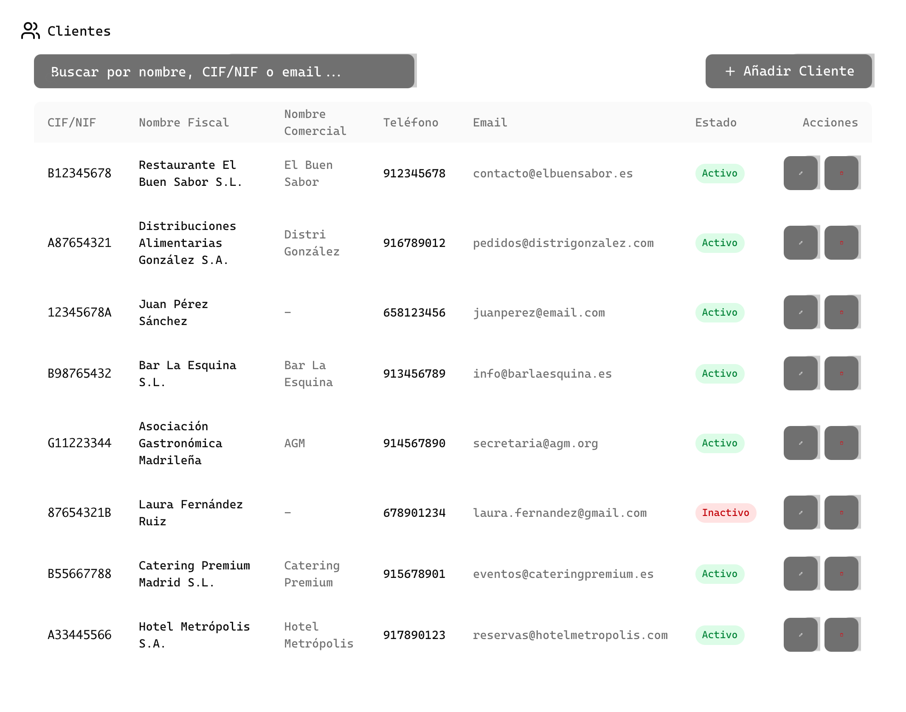
Imagen: Pantalla de gestión de clientes
En el menú lateral, haz clic en Clientes para ver la lista de clientes registrados.
Paso 1: Haz clic en Nuevo Cliente
Paso 2: Completa los datos básicos:
| Campo | Descripción | Obligatorio |
|---|---|---|
| Nombre | Nombre completo o razón social | Sí |
| NIF/CIF | Identificación fiscal | Para facturas |
| Correo electrónico | No | |
| Teléfono | Número de contacto | No |
Paso 3: Para facturas completas (tipo F1), añade la dirección fiscal:
| Campo | Descripción |
|---|---|
| Dirección | Calle y número |
| Código Postal | CP |
| Población | Ciudad |
| Provincia | Provincia |
Paso 4: Haz clic en Crear Cliente
Barra de búsqueda: Busca por nombre, NIF/CIF, teléfono o email
Filtros:
Todos: Muestra todos los clientes
Frecuentes: Clientes con más de X pedidos
Recientes: Últimos clientes añadidos
Durante la comanda:
En Nueva Comanda, haz clic en Asignar Cliente (icono de persona)
Busca y selecciona el cliente
El nombre aparece en la cabecera del pedido
En el cobro:
Al procesar el pago, puedes asignar o cambiar el cliente
Útil para facturas con datos completos
Cuando asignas un cliente con NIF a un pedido:
La factura incluye los datos fiscales completos
Puede ser tipo F1 (factura completa) si tiene todos los datos
El cliente puede recibir copia por email
ℹ️ Facturas tipo F1 Para generar facturas completas (F1), el cliente debe tener NIF y dirección fiscal completa.
Al abrir un cliente puedes ver:
Total de pedidos realizados
Importe total gastado
Último pedido
Productos más comprados
Importar desde CSV:
xxxxxxxxxxnombre,nif,email,telefono,direccion,cp,poblacionJuan García,12345678A,juan@email.com,600123456,Calle Mayor 1,28001,MadridEmpresa SL,B12345678,info@empresa.com,910000000,Av. Principal 10,08001,BarcelonaExportar: Ve a Ajustes → Importar/Exportar → Exportar Clientes
Aprende a cobrar pedidos, gestionar métodos de pago e imprimir tickets.
Paso 1: Abre el pedido desde Nueva Comanda o selecciona uno activo
Paso 2: Haz clic en Cobrar (o en el total del pedido)
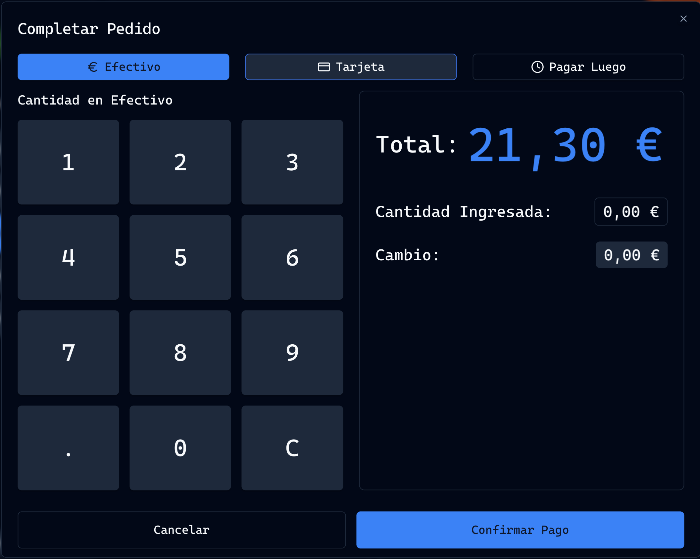
Imagen 13: Pantalla de cobro con métodos de pago
Paso 3: Selecciona el método de pago:
| Método | Descripción |
|---|---|
| Efectivo | Pago en metálico con cálculo de cambio |
| Tarjeta | Pago con tarjeta de crédito/débito |
| Otro | Transferencia, vales, etc. |
Paso 4: Completa el pago:
Para efectivo:
Introduce el importe recibido
El sistema calcula el cambio automáticamente
Haz clic en Confirmar
Para tarjeta:
Haz clic en Confirmar
Procesa el pago en tu datáfono
Paso 5: El ticket se imprime automáticamente
El sistema calcula automáticamente el cambio a devolver:
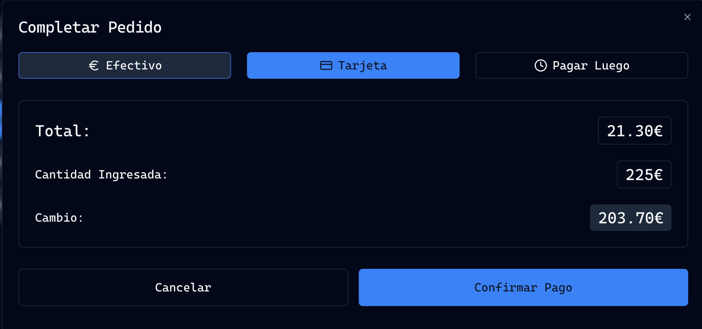
Imagen 14: Cálculo automático de cambio en pago efectivo
Atajos de importe:
Botones rápidos para billetes (5€, 10€, 20€, 50€)
Campo para importe exacto
Botón "Importe exacto" cuando el cliente paga justo
Para combinar varios métodos de pago:
En la pantalla de cobro, haz clic en Pago Mixto
Selecciona el primer método (ej: Tarjeta) e introduce el importe parcial
Haz clic en Añadir
El resto aparece pendiente
Selecciona otro método (ej: Efectivo) y completa
Confirma cuando la suma cubra el total
En Ajustes → Impresora → Ticket puedes configurar:
| Opción | Descripción |
|---|---|
| Logo | Imagen en la cabecera (BMP monocromo) |
| Nombre | Nombre del negocio |
| Dirección | Dirección fiscal |
| CIF/NIF | Identificación fiscal |
| Teléfono | Número de contacto |
| Mensaje pie | Texto personalizado al final |
Automática: El cajón se abre al completar un pago en efectivo (configurable)
Manual: Botón Abrir Cajón en Ajustes o barra de herramientas
Anular pedido (antes de cerrar):
Abre el pedido
Haz clic en Anular Pedido
Introduce el motivo (opcional)
Confirma
Devolución parcial (después de cobrar):
Ve al historial y abre el pedido
Haz clic en Devolución
Selecciona los productos a devolver
Confirma el importe a reembolsar
⚠️ Facturas AEAT Las devoluciones pueden afectar a las facturas si ya fueron enviadas a la AEAT.
Al final del turno o día:
Paso 1: Ve a Ajustes → Caja → Cierre
Paso 2: Revisa el resumen:
Total de ventas
Desglose por método de pago
Número de operaciones
Paso 3: Introduce el efectivo contado en caja
Paso 4: Haz clic en Cerrar Caja
El informe de cierre incluye ventas por categoría, por producto, por usuario e impuestos recaudados.
TPV El Haido incluye integración con el sistema VERI*FACTU de la Agencia Tributaria para el envío automático de facturas electrónicas.
VERI*FACTU es el sistema de la AEAT para verificar facturas electrónicas:
Envío automático de facturas a la AEAT
Verificación mediante CSV (Código Seguro de Verificación)
Cumplimiento de la normativa española de facturación electrónica
⚠️ Consulta con tu asesor La obligatoriedad de VERI*FACTU depende del tipo y tamaño de tu negocio. Consulta con tu asesor fiscal para determinar si te aplica.
Paso 1: Ve a Ajustes → VERI*FACTU
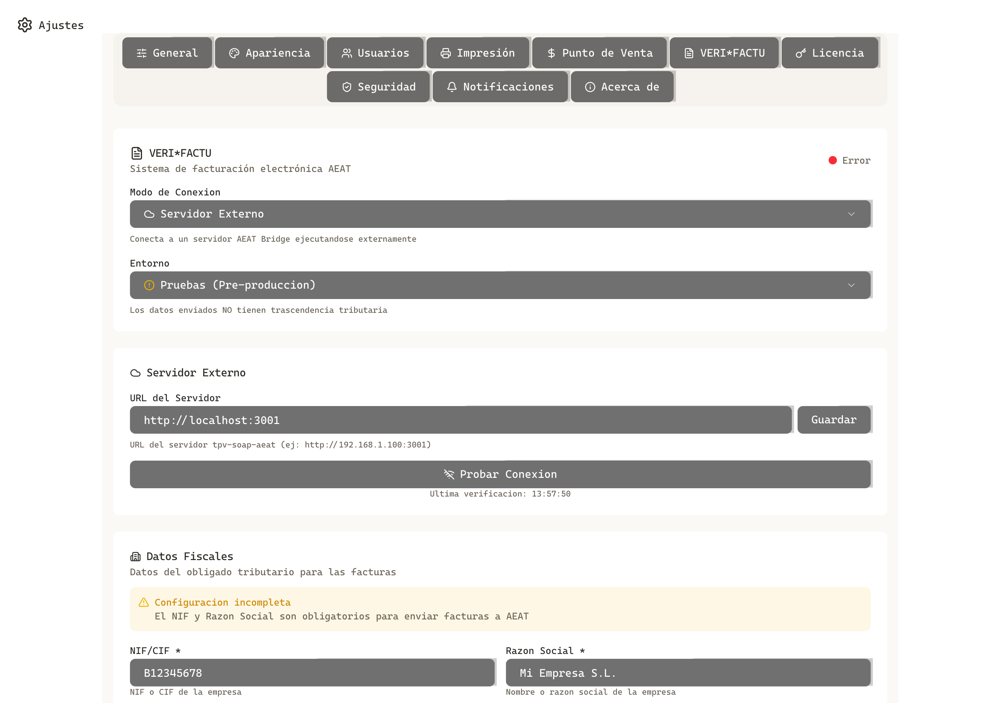
Imagen: Configuración de VERIFACTU en Ajustes*
Paso 2: Introduce los datos del emisor:
| Campo | Descripción | Ejemplo |
|---|---|---|
| NIF | Número de Identificación Fiscal | B12345678 |
| Razón Social | Nombre fiscal de la empresa | Bar El Haido S.L. |
| Dirección | Dirección fiscal completa | C/ Principal, 1 |
| Código Postal | CP de la dirección fiscal | 28001 |
| Población | Ciudad | Madrid |
Paso 3: Configura la serie de factura:
Prefijo: Identificador de serie (ej: "TPV-", "F2024-")
Número inicial: Primer número de factura
Paso 4: Selecciona el tipo de factura:
| Tipo | Código | Uso |
|---|---|---|
| Factura completa | F1 | Con todos los datos del cliente |
| Factura simplificada | F2 | Tickets sin datos completos del cliente |
ℹ️ Tipo F2 La mayoría de TPV usan F2 (factura simplificada) para tickets de venta directa.
Para enviar facturas a la AEAT necesitas un certificado digital válido.
Tipos de certificado:
| Tipo | Formato | Recomendado para |
|---|---|---|
| Personal | PFX/P12 | Autónomos |
| Sello de empresa | PFX/P12 | Sociedades |
Instalar certificado:
Obtén tu certificado en FNMT o entidad autorizada
Exporta en formato PFX/P12 con contraseña
En Ajustes → VERI*FACTU → Certificado, haz clic en Cargar Certificado
Selecciona el archivo PFX/P12
Introduce la contraseña
Haz clic en Verificar
Si es válido, verás el nombre del titular, fecha de caducidad y estado "Válido".
⚠️ Contraseña segura Guarda la contraseña del certificado en un lugar seguro. Sin ella no podrás usarlo.
| Modo | Descripción | Cuándo usarlo |
|---|---|---|
| Deshabilitado | VERI*FACTU desactivado | No envía a AEAT |
| Sidecar | Usa aeat-bridge local (puerto 3001) | Recomendado para un terminal |
| Externo | Servidor AEAT remoto | Multi-terminal, servidor centralizado |
Modo Sidecar (Recomendado):
El proceso se ejecuta localmente
Se inicia automáticamente
Funciona offline (cola de envío)
| Entorno | Descripción |
|---|---|
| Pruebas | Para testing, no tiene efectos legales |
| Producción | Envío real a la AEAT |
❌ Importante Asegúrate de estar en modo Producción cuando operes de forma real. Las facturas en modo Pruebas no son válidas fiscalmente.
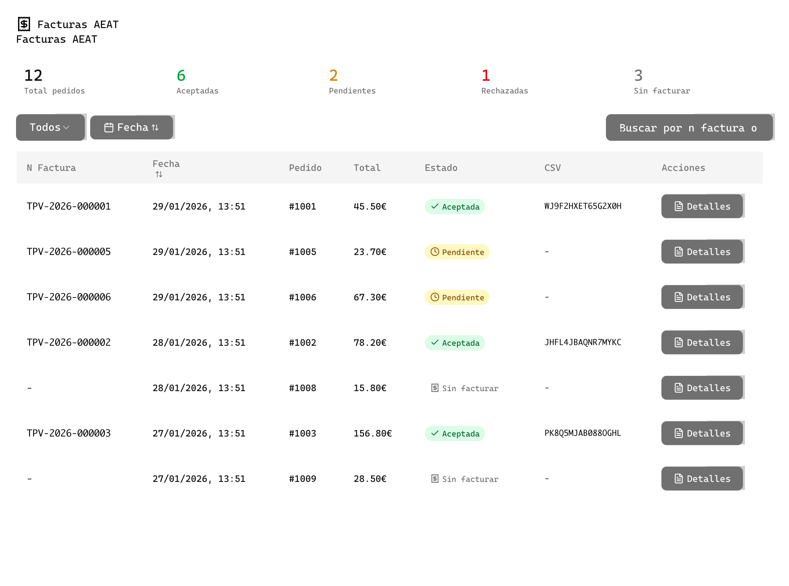
Imagen: Panel de facturas AEAT
Acceder: Menú lateral → Facturas (o AEAT)
Estados de factura:
| Estado | Color | Significado |
|---|---|---|
| Aceptada | 🟢 Verde | Enviada y aceptada por AEAT |
| Pendiente | 🟡 Amarillo | Pendiente de envío |
| Rechazada | 🔴 Rojo | Rechazada por AEAT (ver error) |
| Sin facturar | ⚪ Gris | No se ha generado factura |
Detalle de factura:
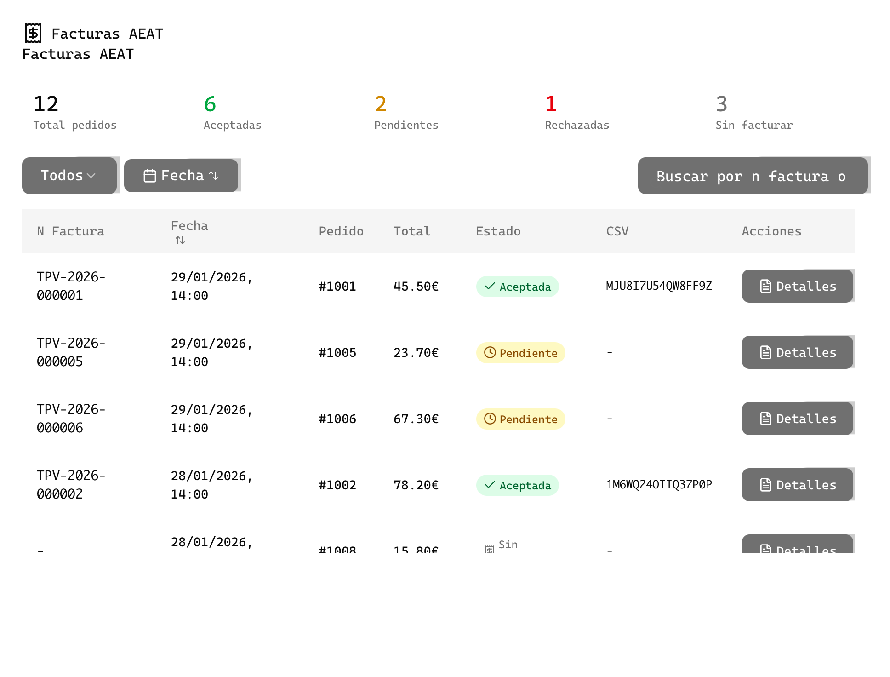
Imagen 10: Detalle de factura con CSV de verificación
Información disponible:
Número de factura
Fecha de emisión
Datos del cliente
Desglose de productos e IVA
CSV: Código Seguro de Verificación
Link para verificar en sede AEAT
Verifica que tus facturas han sido correctamente enviadas a la AEAT:
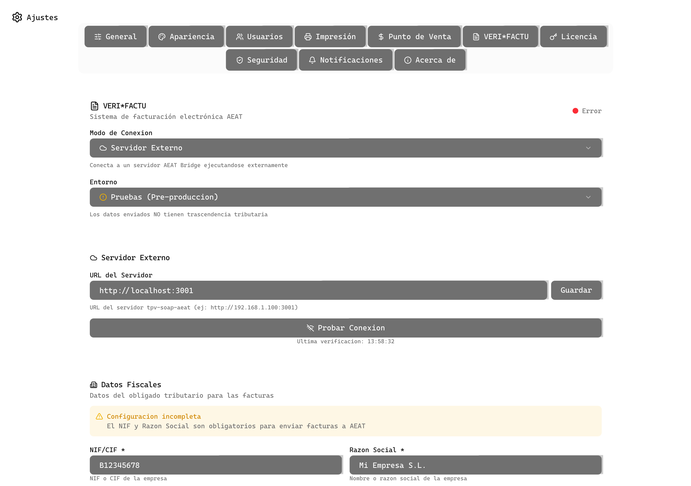
Imagen 11: Pantalla de verificación con CSV
Códigos de estado en el detalle:
| Código | Significado |
|---|---|
| CSV correcto | Factura enviada y validada por AEAT |
| Pendiente | Esperando envío o respuesta de AEAT |
| Error | Rechazada - revisa los datos del emisor |
Número de factura
Fecha de emisión
Datos del cliente
Desglose de productos e IVA
CSV: Código Seguro de Verificación
Link para verificar en sede AEAT
| Error | Causa | Solución |
|---|---|---|
| NIF inválido | El NIF del emisor no es válido | Verifica el NIF en Ajustes |
| Certificado caducado | El certificado ha expirado | Renueva el certificado |
| Error de conexión | No se puede conectar a AEAT | Verifica conexión a internet |
| Factura duplicada | Ya existe factura con ese número | Verifica serie y numeración |
Guía para configurar tu impresora térmica y poder imprimir tickets de venta.
TPV El Haido soporta cualquier impresora compatible con el protocolo ESC/POS:
| Marca | Modelos probados |
|---|---|
| Epson | TM-T20, TM-T88, TM-T82 |
| Star | TSP100, TSP650, mPOP |
| Bixolon | SRP-330, SRP-350 |
| Sewoo | LK-TL200, LK-TL320 |
| Genéricas | Impresoras USB/Serial 58mm, 80mm |
ℹ️ Compatibilidad La mayoría de impresoras térmicas de TPV usan el estándar ESC/POS y son compatibles.
Paso 1: Conectar la impresora
Conecta el cable USB de la impresora a tu ordenador
Enciende la impresora
Espera a que el sistema la detecte
Paso 2: Identificar el puerto
Windows:
Abre "Administrador de dispositivos"
Busca en "Puertos (COM y LPT)"
Anota el número COM (ej: COM3)
macOS/Linux:
xxxxxxxxxx# macOSls /dev/tty.*
# Linuxls /dev/ttyUSB*Anota el dispositivo (ej: /dev/ttyUSB0)
Paso 1: Configura una IP estática en la impresora (consulta el manual)
Paso 2: En Ajustes → Impresora:
Tipo de conexión: Red
IP: (ej: 192.168.1.100)
Puerto: 9100 (estándar)
Paso 1: En el menú lateral, ve a Ajustes → Impresora
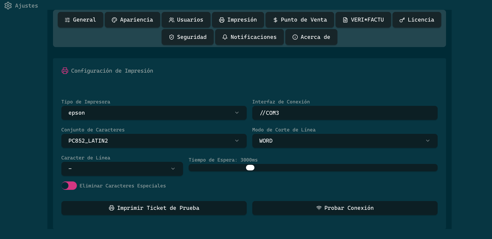
Imagen 18: Configuración de impresora en Ajustes
Paso 2: Configura la conexión:
| Campo | Descripción | Ejemplo |
|---|---|---|
| Tipo | USB, Red, Bluetooth | USB |
| Puerto/IP | Puerto COM o dirección IP | COM3, 192.168.1.100 |
| Puerto de red | Solo para conexión de red | 9100 |
Paso 3: Selecciona el ancho de papel:
| Ancho | Caracteres por línea | Uso común |
|---|---|---|
| 58mm | ~32 caracteres | Portátiles, pequeñas |
| 80mm | ~48 caracteres | Estándar de mostrador |
Paso 4: Haz clic en Probar Impresora para imprimir un ticket de prueba
En Ajustes → Impresora → Ticket:
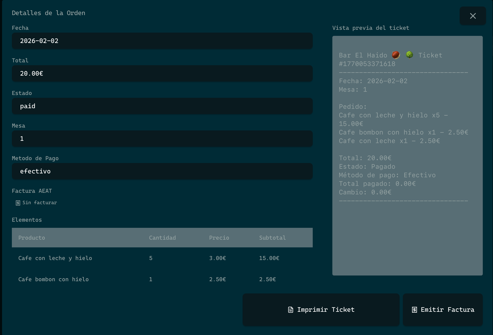
Imagen 19: Ejemplo de ticket impreso de 80mm
| Campo | Descripción |
|---|---|
| Nombre negocio | Se muestra en grande en la cabecera |
| Dirección | Línea de dirección |
| Localidad | Ciudad y código postal |
| CIF/NIF | Identificación fiscal |
| Teléfono | Número de contacto |
| Mensaje pie | Texto al final (ej: "¡Gracias por su visita!") |
Añadir logo:
Prepara la imagen en formato BMP monocromo
Tamaño: 384px de ancho para 80mm, 256px para 58mm
Haz clic en "Subir logo" y selecciona el archivo
💡 Mejor impresión Usa una imagen de alto contraste para mejor calidad en impresión térmica.
Configurar:
Conecta el cajón al puerto RJ-11 de la impresora
En Ajustes → Impresora, activa "Abrir cajón automáticamente"
Apertura automática: Al completar pagos en efectivo
Apertura manual: Botón Abrir Cajón en la barra de herramientas
Si tienes una segunda impresora para cocina:
En Ajustes → Impresora → Impresoras adicionales
Haz clic en Añadir impresora y configura como "Cocina"
En Categorías, activa "Enviar a cocina" para las categorías de comida
La impresora no imprime:
| Sistema | Solución |
|---|---|
| Windows | Verifica puerto COM, reinstala driver, prueba otro cable |
| macOS | Ejecuta: sudo chmod 666 /dev/tty.* |
| Linux | Añade usuario al grupo dialout: sudo usermod -a -G dialout $USER |
Caracteres extraños: Verifica que el ancho de papel (58mm/80mm) es correcto
El cajón no abre: Verifica cable RJ-11 y voltaje del cajón (12V o 24V)
TPV El Haido incluye un sistema de temas completo para adaptar la interfaz a tu negocio.
La aplicación incluye 6 temas predefinidos:
| Tema | Estilo | Ideal para |
|---|---|---|
| Amethyst Haze | Violeta elegante | Locales sofisticados |
| Bubble | Rosa vibrante | Ambiente juvenil |
| Restaurant Professional | Dorado cálido | Restaurantes clásicos |
| Modern Cafe | Verde minimalista | Cafeterías modernas |
| Night Bar | Oscuro con neón | Bares nocturnos |
| High Contrast | Blanco/Negro | Máxima legibilidad |
Paso 1: Ve a Ajustes → Apariencia (o Tema)
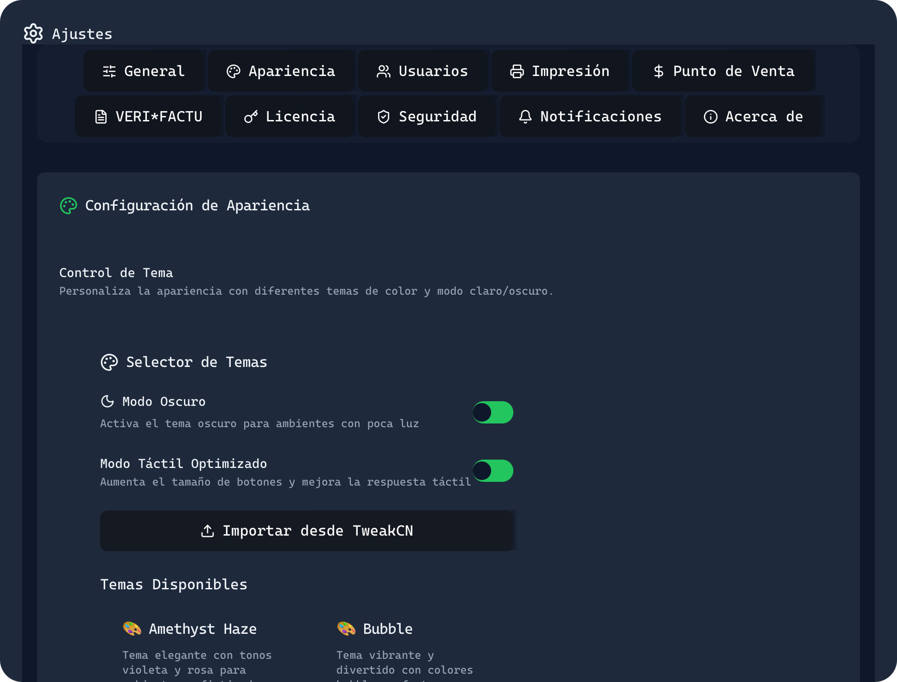
Imagen: Selector de temas disponibles
Paso 2: Haz clic en el tema que prefieras (el cambio se aplica inmediatamente)
Paso 3: Elige el modo:
Claro: Fondos claros, texto oscuro
Oscuro: Fondos oscuros, texto claro
Sistema: Sigue la preferencia del sistema operativo
Amethyst Haze — Tema elegante con tonos violeta y púrpura
| Propiedad | Modo claro | Modo oscuro |
|---|---|---|
| Fondo | Lavanda suave | Púrpura profundo |
| Primario | Violeta | Violeta brillante |
| Acento | Rosa | Magenta |
Restaurant Professional — Tema clásico con tonos cálidos y dorados
| Propiedad | Modo claro | Modo oscuro |
|---|---|---|
| Fondo | Crema | Marrón oscuro |
| Primario | Dorado | Ámbar |
| Acento | Terracota | Cobre |
Night Bar — Tema oscuro con acentos de neón
| Propiedad | Modo claro | Modo oscuro |
|---|---|---|
| Fondo | Gris azulado | Negro |
| Primario | Azul eléctrico | Cian neón |
| Acento | Púrpura | Rosa neón |
High Contrast — Tema de alto contraste para máxima accesibilidad
| Propiedad | Modo claro | Modo oscuro |
|---|---|---|
| Fondo | Blanco puro | Negro puro |
| Primario | Negro | Blanco |
| Acento | Azul oscuro | Amarillo |
Todos los temas incluyen optimizaciones para pantallas táctiles:
Tamaños de botón: Mínimo 44×44px siguiendo las guías de Apple
Espaciado extra: Para evitar toques accidentales
Áreas de toque amplias: Facilitan el uso con el dedo
Modo de alto contraste: Para usuarios con dificultades visuales, entornos con mucha luz o pantallas de baja calidad.
Preferencias del sistema detectadas:
prefers-reduced-motion: Desactiva animaciones
prefers-contrast: high: Activa bordes adicionales
prefers-color-scheme: Modo claro/oscuro automático
| Tu negocio | Tema recomendado |
|---|---|
| Restaurante clásico | Restaurant Professional |
| Cafetería moderna | Modern Cafe |
| Bar de copas | Night Bar |
| Local juvenil | Bubble |
| Accesibilidad | High Contrast |
| Elegante/boutique | Amethyst Haze |
Consejos adicionales:
En dispositivos lentos, usa High Contrast (menos efectos)
El modo oscuro puede ahorrar batería en pantallas OLED
Elige un tema y mantenlo para que tu equipo se familiarice
El modo oscuro es útil para turnos nocturnos
Consulta la información de tu instalación y versión del software.
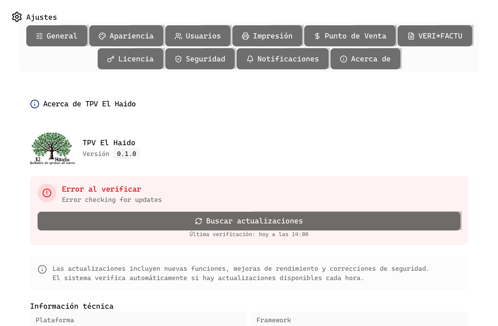
Imagen 12: Pantalla "Acerca de" con información del sistema
Información disponible:
| Campo | Descripción |
|---|---|
| Versión | Número de versión instalada |
| Licencia | Estado y tipo de licencia |
| Fingerprint | Identificador único del equipo |
| Enlaces | Documentación, soporte, GitHub |
Actualizaciones:
El sistema busca actualizaciones automáticamente al iniciar. Para actualizar manualmente:
Ve a Ajustes → Acerca de
Haz clic en Buscar actualizaciones
Si hay una nueva versión, sigue el asistente
Copiar fingerprint:
El fingerprint es útil para:
Generar nuevas licencias
Soporte técnico
Identificar el equipo
| Atajo | Acción |
|---|---|
Ctrl/Cmd + N | Nueva comanda |
Ctrl/Cmd + P | Imprimir ticket |
Esc | Cerrar diálogo actual |
Enter | Confirmar acción |
Tab | Navegar entre campos |
TPV El Haido v1.0.0
© 2026 TPV El Haido. Marcos Asensio. Todos los derechos reservados.